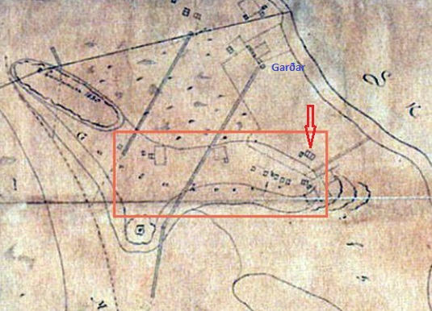

Fyrsta býlið reisti Grímur Egilsson árið 1842 og nefndi bæinn Grímsstaði sem Grímsstaðarholtið var síðan kennt við en áður hafði svæðið kallast Móholt. Síðasti Grímsstaðarbærinn stóð nálægt gatnamótum Dunhaga og Ægissíðu eða þar sem nú er Ægissíða 62. Engin byggð var þá á þessum slóðum en framhjá holtinu lá aðalleiðin frá Reykjavík suður í Skildinganes, þaðan sem ferjað var til Bessastaða, Hafnarfjarðar og suður með sjó. Farið var að kalla þennan slóða Melaveg en síðar var nafninu breytt í Suðurgötu. Á Grímsstaðarholtinu reis smá saman þéttbýliskjarni án fastmótaðs skipulags sem taldist nokkuð einangraður frá miðbænum. Þótti heldur minni ljómi yfir því fátæka tómthúsfólki sem þar bjó en þeim íbúum sem síðar áttu lögheimili við Ægissíðuna. Myndin sýnir hluta af korti af Grímsstaðarholti frá 1887. Innan ferninginsins má sjá tómthúsabyggðina sem byrjaði að myndast á seinni hluta 19. aldar. Örin bendir á bæinn Grímsstaði. Í gegnum svæðið gengur vegur frá Görðum, sem byggðir voru um 1860, kallaður Garðavegur. Strandlengjan sést ofarlega hægra megin á myndinni og stafirnir Sk eru byrjunin á orðinu Skerjafjörður.